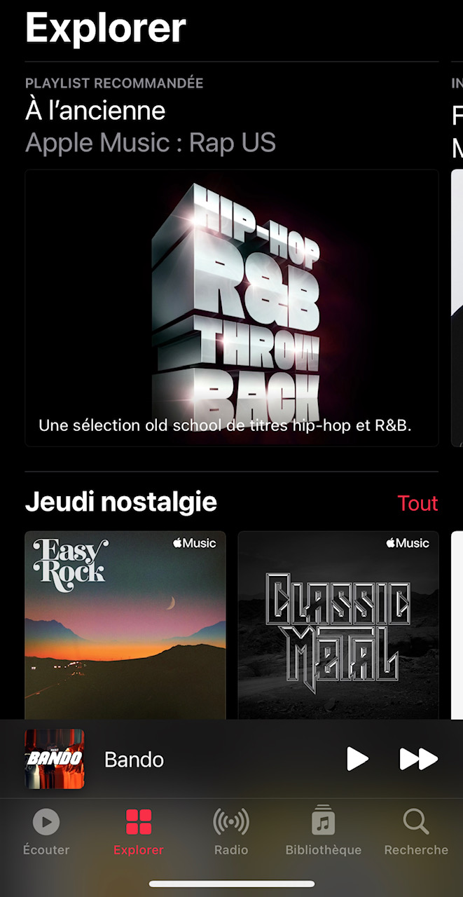

Présentation
Apple Music voit le jour le 30 juin 2015, suite au rachat de Beats par la marque à la pomme.
Initialement prévue pour les utilisateurs d'Apple, aujourd'hui, Apple Music est disponible sur iOs,
Androïd, Web, Windows mais aussi avec Alexa.
Toujours en quête d'expansion, les services ne cessent de fleurir, intégrant au fil du temps, de
plus en plus de radios, des émissions, des séries, des concerts, une chaine de télé…
En mai 2021, Apple offre une meilleure qualité sonore avec le codec ALAC et de l'audio Dolby Atmos.
![]()
Utilisation
L'application est très simple et intuitive. Il y a cinq onglets en bas d'écran comme vous pouvez le constater sur les différents screenshots
L'onglet "Ecouter":
Cet onglet nous propose les dernières musiques et playlists
écoutées ainsi qu'une suggestion faite
par
l'algorithme de l'appli en fonction de nos goûts.
L'onglet "Explorer":
Cet onglet nous propose également des playlist en fonction de nos goûts
mais aussi de nombreuses
interview, les nouveautés de la semaine
et un thème musical par jour.
L'onglet "Radio":
Comme son nom l'indique,
dans cet onglet ci on se voit proposer des radios par thèmes
avec en
priorité
les radios plus succeptibles de nous plaire
L'onglet "Bibliothèque":
La bibliothèque est tout simplement notre repertoire musical,
où on peut retrouver nos musiques
téléchargées ainsi que nos playlists.
D'ailleurs vous pourrez retrouver plus bas une petite liste
des playlists
que j'ai créee et
que j'adore !
L'onglet "Rechercher":
L'onglet recherche nous permet simplement de chercher
la musqiue que l'on souhaite.
Que ce soit
par
thèmes ou juste en tapant le nom
de l'artiste ou le titre de la musique désirée.
Pourquoi j'aime cette application?
Etant un grand amateur de musique en tout genre, c'est tout naturellement que je commence ce projet en présentant l'application Apple Music.
J'ai essayé plusieurs plateformes de streaming de musique, notamment Deezer, Spotify et Napster. Mais aucune ne m'a satisfaite autant qu'Apple Music. Le desing de l'interface ainsi que la multitude d'artistes présents sur cette plateforme en font pour moi, la N°1 des platerformes de streaming.